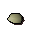
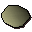
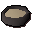

Pot of flour
| Config name | pot_flour |
| Item id | 1933 |
| Value | 10 gp |
| Weight | 3lb |
| Members | No |
| Tradeable | Yes |
| Stackable | No |
| Defined in | scripts/skill_cooking/configs/cooking_inv/configs/cakes/cakes.obj |
Pot of flour
There is flour in this pot.
Used to make
| Skill | Level | XP | Ingredients | Tool | How | Where | Makes |
|---|---|---|---|---|---|---|---|
| Cooking | 1 | chat menu Bread dough. / Pastry dough. / Pizza dough. / Pitta dough. | gives back | ||||
| Cooking | 1 | chat menu Bread dough. / Pastry dough. / Pizza dough. / Pitta dough. |  Pastry doughgives back | ||||
| Cooking | 1 | chat menu Bread dough. / Pastry dough. / Pizza dough. / Pitta dough. |  Pizza basegives back | ||||
| Cooking | 1 | use on item |  Uncooked cake | ||||
| Cooking | 1 | chat menu Bread dough. / Pastry dough. / Pizza dough. / Pitta dough. | gives back |
Dropped by
| NPC | Level | Quantity | Rarity | Via | Notes |
|---|---|---|---|---|---|
| 2 | 1 | 1/64 (1.56%) | |||
| 33 | 1 | 1/128 (0.78%) | |||
| 33 | 1 | 1/128 (0.78%) | |||
| 36 | 1 | 1/128 (0.78%) | |||
| 32 | 1 | 1/138 (0.72%) |
Sold at
| Shop | Shopkeeper | Stock |
|---|---|---|
| Khazard General Store | 30 | |
| Grand Tree Groceries | 5 | |
| Food Store | 3 | |
| Frenita's Cookery Shop. | 8 |
Quests
Cook's Assistant Murder Mystery Sea Slug
Referenced in scripts
scripts/areas/area_draynor/scripts/aggie.rs2scripts/drop tables/scripts/black_knight.rs2scripts/drop tables/scripts/imp.rs2scripts/drop tables/scripts/tribesman.rs2scripts/drop tables/scripts/white_knight.rs2scripts/general_use/scripts/water_sources.rs2scripts/general_use/scripts/windmills.rs2scripts/quests/quest_cook/scripts/cook_journal.rs2scripts/quests/quest_cook/scripts/quest_cook.rs2scripts/quests/quest_murder/scripts/quest_murder.rs2scripts/quests/quest_seaslug/scripts/quest_seaslug.rs2scripts/skill_cooking/scripts/cooking_inv/scripts/cakes/cakes.rs2scripts/skill_cooking/scripts/cooking_inv/scripts/dough/dough.rs2